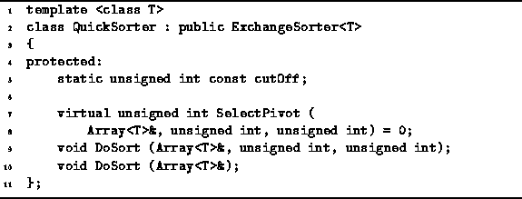
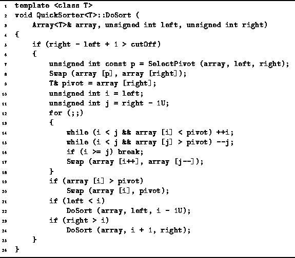
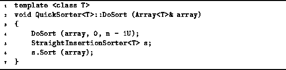

Data Structures and Algorithms
with Object-Oriented Design Patterns in C++
Data Structures and Algorithms
with Object-Oriented Design Patterns in C++
Program  declares
the abstract QuickSorter<T> class template.
The QuickSorter class declares two versions
of the DoSort routine,
as well as the pure virtual function SelectPivot.
Since SelectPivot is a pure virtual function,
its implementation is given in a derived class.
declares
the abstract QuickSorter<T> class template.
The QuickSorter class declares two versions
of the DoSort routine,
as well as the pure virtual function SelectPivot.
Since SelectPivot is a pure virtual function,
its implementation is given in a derived class.

Program: QuickSorter Class Definition
Program defines the DoSort routine
of the QuickSorter<T> class
that takes three arguments--a reference to the array to be sorted, array,
and two integers, left and right,
which denote left and right ends, respectively,
of the sequence of the array to be sorted.
I.e., this DoSort routine sorts
.

Program: QuickSorter<T> class Recursive DoSort Member Function Definition
As discussed above, the QuickSorter only sorts sequences whose length exceeds the cut-off value. Since the implementation shown only works correctly when the number of elements in the sequence to be sorted is three or more, the cut-off value of two is used (line 5).
The algorithm begins by calling the function SelectPivot which chooses one of the elements to be the pivot (line 7). The implementation of SelectPivot is discussed below. All that we require here is that the value p returned by SelectPivot satisfies . Having selected an element to be the pivot, we hide the pivot by swapping it with the right-most element of the sequence (line 8). The pivot is hidden in order to get it out of the way of the next step.
The next step partitions the remaining elements into two sequences--one comprised of values less than or equal to the pivot, the other comprised of values greater than or equal to the pivot. The partitioning is done using two array indices, i and j. The first, i, starts at the left end and moves to the right; the second, j, starts at the right end and moves to the left.
The variable i is increased
as long as array[i] is less than the pivot (line 14).
Then the variable j is decreased
as long as array[j] is greater than the pivot (line 15).
When i and j meet,
the partitioning is done (line 16).
Otherwise,  but .
This situation is remedied
by swapping array[i] and array[j] (line 17).
but .
This situation is remedied
by swapping array[i] and array[j] (line 17).
When the partitioning loop terminates, the pivot is still in array[right]; the value in array[i] is greater than or equal to the pivot; everything to the left is less than or equal to the pivot; and everything to the right is greater than or equal to the pivot. We can now put the pivot in its proper place by swapping it with array[i] (lines 19-20). This is called restoring the pivot. With the pivot in its final resting place, all we need to do is sort the subsequences on either side of the pivot (lines 21-24).
Program defines the main DoSort routine
of the QuickSorter class.
The main DoSort acts as the front end
to the recursive DoSort given in Program .
This routine takes as its lone argument a reference to the array to be sorted.
It calls the recursive DoSort routine
with left set to zero
and right set to n-1,
where n is the length of the array to be sorted.
Finally, it uses a StraightInsertionSorter<T>
to finish sorting the list.

Program: QuickSorter<T> Class Main DoSort Member Function Definition
 Copyright © 1997 by Bruno R. Preiss, P.Eng. All rights reserved.
Copyright © 1997 by Bruno R. Preiss, P.Eng. All rights reserved.